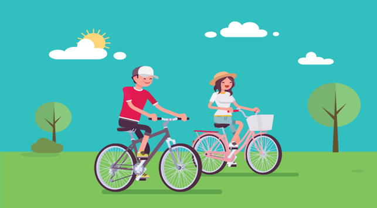

Bersepeda Di Tengah Pandemi
Bersepeda menjadi salah satu olahraga yang tengah digandrungi dimasa pandemi ini oleh masyarakat, tak terkecuali dengan Jajaran Kantor Kementerian Agama Kab. Sinjai yang memang telah memiliki Komunitas Sepeda Kemenag Cycling Community Sinjai (KCC Sinjai). yang di Ketuai Muh Amin Kasim Kamad Mtsn 4 Sinjai bersepeda (Gowes) Pagi di hari, dengan gaya hidup sehat dan olahraga teratur menjadi cara menjaga kesehatan, kebugaran dan daya tahan tubuh.
Read more >>